Walrus
: 바다코끼리국내 유일 바다코끼리 자매, 메리와 바랴
웅장한 바다와 해양과학이 만나는 곳
아쿠아플라넷의 다양한 프로그램을 만나보세요.
국내 유일! 바다코끼리 자매 메리&바랴 생태설명회
반가운 마스코트 바다코끼리 자매, 메리와 바랴의 행복한 수중 라이프를 보고 들을 수 있는 국내 유일한 이곳! 아쿠아플라넷 일산에서 메리와 바랴를 만나보세요!
최초 수중 퍼포먼스 아이돌 ‘시크릿 에이전트 뉴이브’
세계 최초 수중 퍼포먼스 아이돌 ‘뉴이브’ 수중 아이돌 퍼포먼스가 홀로그램과 함께 화려한 공연으로 펼쳐집니다 K-pop 아이돌이 되어 지구를 지키려는 최정상 걸그룹 ‘뉴이브‘ 여수에서 만나보세요!
오션라이프 만찬- 대형 메인 수조 피딩
약 60여종 3000여 마리가 함께 생활하고 있는 대형 메인수조! 크기와 모양이 각기 다른 이 친구들은 밥을 어떻게 먹을까요?!
해녀의 이야기를 담은 아쿠아플라넷 제주 대표 공연
아쿠아마린쇼 (해녀, 망사리의 모험) 아찔하게 펼쳐지는 다이나믹 수중 퍼포먼스를 즐겨보세요!
드넓은 대양을 품은 아름다운 행성

전국 4개지역에서 아쿠아플라넷을 만나보실 수 있습니다.
아쿠아플라넷 일산
아쿠아플라넷 광교
아쿠아플라넷 여수
아쿠아플라넷 제주